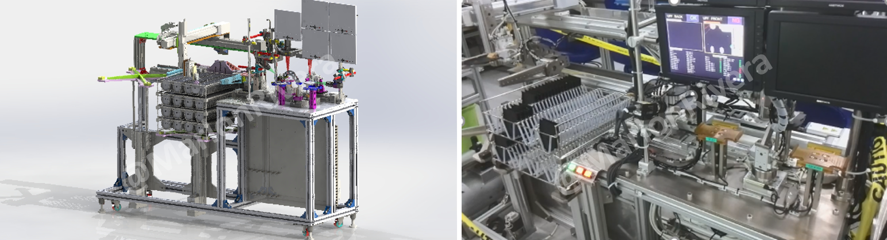

My Role
Responsibilities
Machine concept, mechanical design, PLC/HMI programming, vision integration, sensors and electrical design support.
Vision Automation • Philippines • 2014
Automated inspection system designed to replace manual visual checking and improve consistency, traceability and production efficiency.

My Role
Machine concept, mechanical design, PLC/HMI programming, vision integration, sensors and electrical design support.
Challenge
Manual inspection depended on operator experience and created inconsistent results during high-volume production.
Solution
Integrated product detection, precision positioning, camera inspection and automatic pass/fail handling into one synchronized sequence.
Project Impact
Project Discussion